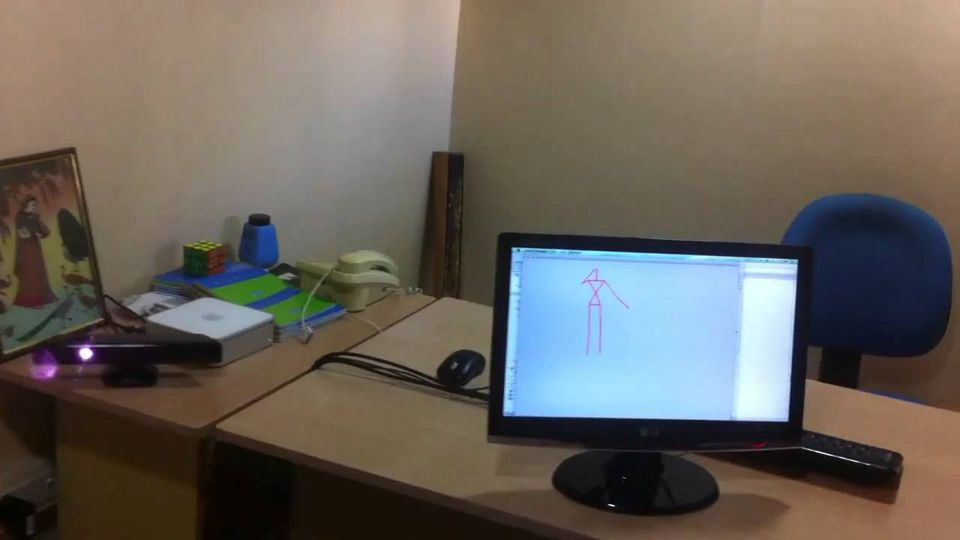

kinectSkeleton tracking on MacOS using KinectFinally I successfully integrated OpenNI and NITE beta on my macOS and
kinectKinect libraries integrated with Cocoa in XCodeNow, I just integrated OpenKinect into my xCode project and can read
kinectMy first step in Kinect and Mac MiniI just successfully compiled the openKinect and tested my new device Kinect.
Near SpaceIndian High Altitude Balloon ClubHere, we go. Having a dream dumped deep into your head for